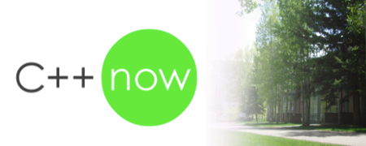
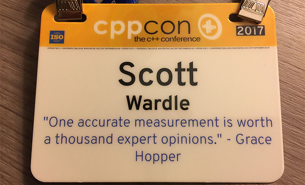

Debuggers and constexpr
A way to debug constexpr functions or other functions that have been 100% removed from the EXE
A way to debug constexpr functions or other functions that have been 100% removed from the EXE

I have been told the place to see the science of C++ happening is C++Now. The best and the brightest in the C++ community try to push the language forward.

This year I did my 2nd CPPCON presentation this last September. It was a topic that is getting more and more important, packages and modules but I will talk about that later. You can see my presentation here. For now it is January and most people have done their CPPCON write up months ago so lets do that first.
I hate when I am stuck on some problem. I am very stubborn when it comes to fixing some problem. I’d often just power though problems. Just keep trying ideas even if I know most of them will not work hoping I would just stumble on to the solution (or often stumble on to the real problem).
However this powering though often does not work. Sometimes you are just waiting for genus.
READ MORE
This first blog post is about me and my start in programming. I have never been one to write a lot. Those who know me know why I am very dyslexic so it takes a long time. But my wife Seiko is learning web design so I figured I could help by learning some Javascript by writing some games. I will go into these things on different days.
READ MORE